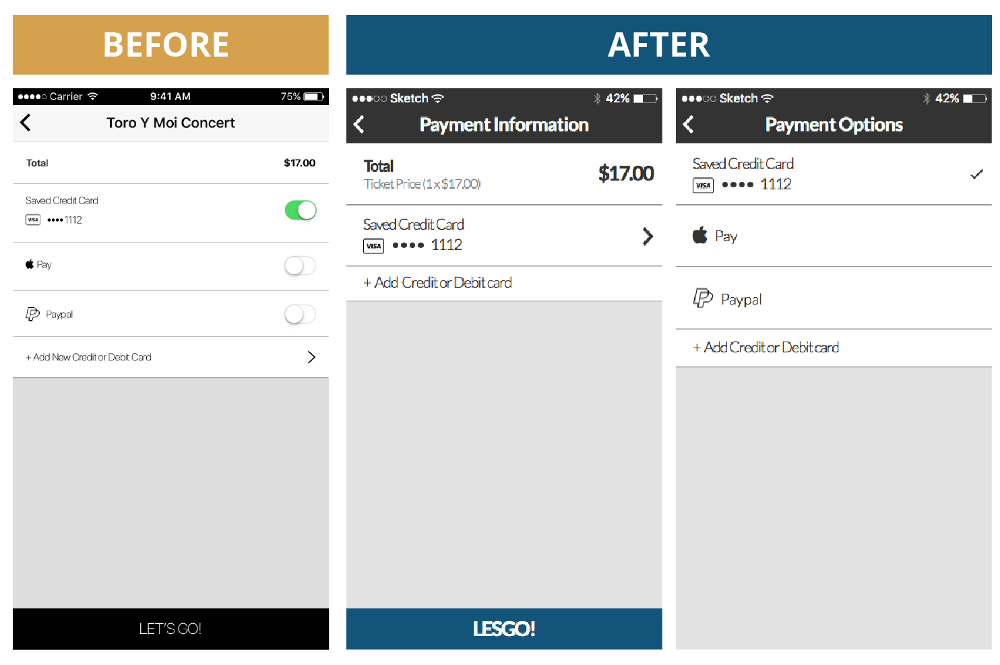
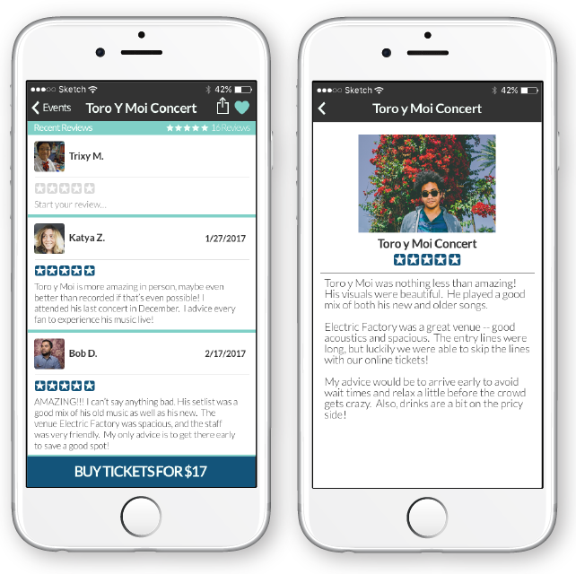

UX/UI Research | Mobile Design | Branding
Lesgo
Lesgo is a concept application that allows users to discover nearby events in their city, read reviews, check out photos, and purchase tickets in advance to avoid wait times. Imagine traveling to a new city and being able to sort through all the different fitness, music, food, and creative events at your fingertips!
Problem
According to survey results, the majority of users discover events via word of mouth, 32.3%, and 29% via Facebook. These statistics show that finding events rely heavily on people's network of friends, therefore making it difficult to for some to discover new ones. As discovered through user interviews, some people go through a long process of finding photos of events on Instagram, then reading previous attendee’s reviews on Yelp, and finally purchasing tickets on the event website.
Solution
Lesgo makes the process of discovering
nearby event streamlined for users -
users can discover events, read reviews,
gather information, and purchase tickets!
This case study involved user
research, user personas, user testing,
competitive analyses, wireframing, and
prototyping (InVision) completed in a
span of 4 weeks.
View the full Lesgo prototype in InVision!
I used this information to help make design decisions and proceed forward in developing Lesgo.
There seemed to be a trend that most people found events through word of mouth or social media.
User Surveys
Prior to making any design decisions, I created a survey to send out to potentials users of Lesgo. From previous experience, it is easy to get into the mindset of designing for oneself. A user survey was the perfect opportunity to better understand the perspectives of my users as well as gain insight on how they find events. Some questions that were asked:
- How do you discover nearby events?
- What is the most important information when viewing an event?
- How important are reviews?
- How do you usually purchase tickets for events?
This survey was distributed via online forums and social media. About 25 responses were obtained, and the key insights were as following:
- About 32.3% of users discovered local events via Word of Mouth; 29% via Facebook, 12.9% via Google Searches, 9.7% via Email Subscriptions, and other responses were via Yelp, Instagram, and Trip Advisor
- The most important information when viewing an event were 80% price, 75%% Time/Date, 75% Location, 70% Event Description, 40% Reviews and Friends Attending
- 40% always check previous reviews, 45% sometimes, and 15% never do
- Surprisingly, 100% of users find importance in images or videos shared by previous event attendees!
- 55% of users always share events with friends, 45% do sometimes
- 95.2% of users purchase tickets through an event website or mobile app
- 100% of users find it useful to receive notifications for nearby events
User Personas
After sending out surveys and analyzing the results, I conducted follow-up interviews with a small number of respondents to dig deeper and discover specific ways to solve the problem at hand. My conversations with these individuals allowed me to better understand my users and tailor Lesgo towards their needs. View user personas for Lesgo!
User Flows
My next step forward with Lesgo was to use my competitive analysis, user survey, and user personas to help create flows for potential users. I used my research to help dictate the importance of information needed to create a minimum viable product. The main user flows can be seen below:
New User: Creating an Account
Discovering Events

User Profile Flow
Purchasing Tickets
Leaving Reviews
Competitive Analysis
To create an application that would be useful for my users and to better understand my competitors, I performed an analysis. I chose to research Yelp, Time Out, and Fever; I wanted to see how Yelp emphasized the idea of leaving reviews for events and venues while discovering areas for improvement. Time Out and Fever are apps that allow users to find events; however, I wanted to identify their areas for improvement. View the full competitive analysis for Lesgo!
Branding
I wanted the branding for Lesgo to be playful, casual, and fun. I chose the name Lesgo as play on words for “Let’s Go.” In regards to the mobile icon, I chose a location pin with an arrow going through it to represent going to a new event.
Mid-Fidelity Wireframes
After making quick low fidelity hand sketches, I moved forward with mid fidelity wireframes. My primary design goal was to make a simple user interface that allowed users to quickly find nearby events, information, images, reviews, and proceed with an in-app purchase of tickets. The product had to make this process streamline and succinct enough to not discourage users from purchasing tickets. Lesgo would ideally remove the stress of having to switch through different websites and mobile applications to find and purchase tickets for events. The purpose of creating mid fidelity wireframes would be to determine the hierarchy of information, a grid system, and specific images needed. Explore all the mid-fidelity wireframes of Lesgo!

Design Iterations
Using the mid fidelity wireframes that were made, I created a clickable prototype using InVision. As this made the user flows more tangible, I performed in-person user tests, specifically navigation tests. This allowed me to gain a new perspective, personal feedback in terms of information architecture, and identify confusing design elements. The information gained from testing was extremely valuable. I used their feedback to make design decisions when creating high fidelity wireframes for Lesgo. View the detailed user testing results or the Lesgo prototype in InVision!
I discovered that the descriptive text on the onboarding process did not give much information about Lesgo. Therefore, improvements were made to better describe all the uses of Lesgo. In addition, rather than forcing users to scroll through each onboarding page and image, having fixed ‘Log In’ and ‘Sign Up’ buttons would be much easier for returning users.
Through my users, I've learned the importance of specificity with descriptions and call-to-action buttons. For this particular example, many users did not understand what was being shared. One user explained that they thought Lesgo had to be shared with friends in order to enter the app itself, rather than sharing their location. Simply stating ‘Share Location’ in replacement of ‘Share’ resolved this confusion.
Users stated that the pins on the map did not show enough detail to convey information. Also, it was difficult for them to identify their location in relation to the map. I also realized that I needed to differentiate the selected event from the other pins. Lastly, the typography displaying the event information was too small and illegible.
Users stated that the toggle buttons for selecting a payment method was odd and made them feel more inclined to make an accidental error. To resolve this issue, I created a second screen to select the desired payment option. After selecting a payment method, the user will return to the checkout flow and can verify they selected the correct option.
User testing has taught me that following traditional UX conventions ensures trust with users. In this example, in the mid fidelity wireframe, I did not mention any email confirmations when making a purchase on Lesgo. Users explained they would prefer email confirmations in addition to in-app tickets, as that is the convention they are accustomed to.
Lesgo Features:
Discovering Events
Lesgo allows users to share their location and discover nearby events by either a list view or a map view. According to user surveys, the most important information when discovering a new event are price (80%), time/date (75%), location (75%), event description (70%), and reviews & friends attending (40%). These statistics dictated the hierarchy of information displayed on an event page.
User Accounts
As previously mentioned, most people discover events through word of mouth
and social media. This information stressed the importance of connecting
social media to Lesgo. In addition, survey results showed that 100% users
often share events with friends; therefore a prominent sharing feature
would be very important.
Another necessary user flow would be to update payment settings --
adding credit or debit cards, Paypal, and Apple Pay. Users should also be
able to view previous purchases for events.
Purchasing Tickets
Lesgo allows users to purchase tickets in advance to avoid wait times and to secure spots. Survey results show that 95.2% of users purchase tickets through an event website or mobile app. When designing the wireframes for purchasing tickets, I carefully thought through the process to ensure simplicity and security. Through user testing, I learned that many users prefer both in-app tickets as well as email confirmation, as that is the most common convention.
Rating & Reviewing
Another important feature of Lesgo is the ability to leave reviews and post photos. 100% of users find importance in images or videos shared by previous event attendees. 85% of users occasionally look at reviews left for events. These statistics represent the significance of a user being able to read, write, and share reviews. When designing user flows for leaving reviews, I thought it would be useful if there were multiple ways to do so.
Lessons Learned
Lesgo was my first experience creating a mobile application for iOS.
I tried my best to adhere to iOS Human Interface Guidelines while designing
Lesgo in regards to consistency in text styles, interface elements, and icons.
If time wasn’t a constraint, I would have ideally liked to create an Android
version reflecting the Android Material Design guidelines. In terms of
the design process, I would have liked to spend more time focusing on wireframes.
I focused on creating wireframes for a minimal viable product; a few features
I would’ve liked to create are a filter function that allows users to sort
through events and wireframes to set notifications for new upcoming events.
Designing Lesgo taught me the importance of user testing.
It is easy to get into the mindset of designing for oneself,
but testing and interviewing allowed me to experience and think like a user.
For future design projects, I’d like to test prototypes as soon as possible
in order to gather more feedback and incorporate more iterations.
Previous Project Home
Click the image below to view the Lesgo InVision Prototype!